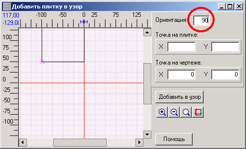

В этом окне отображается плитка, из которой составляется узор. На ней нужно обозначить точку, так называемую точку на плитке , которая при добавлении плитки в узор совместится с точкой на чертеже . Точка ставится просто щелчком мыши в нужном месте на чертеже.
|
Примечание . Однажды обозначенная, точка уже не удаляется с чертежа. Если точку не обозначать, то за точку на плитке принимается базовая точка плитки (обозначена фиолетовым крестиком).
|
В правой части окна можно ввести точные координаты точки на плитке и точки на чертеже . Изменения координаты набирают силу когда в поле ввода координаты нажать Enter или выйти из этого поля ввода.
Над координатами точек расположено поле ввода ориентации. Здесь задается поворот плитки вокруг базовой точки. Углы отсчитываются как в геометрии - от горизонтальной оси против часовой стрелки. Для узора, пример которого приведен в главе Редактор узоров, плитку нужно повернуть на 90 градусов. Нужно войти в поле Ориентация, набрать "90" и нажать Enter.

Теперь плитка повернута на 90 градусов вокруг базовой точки. При этом она может уйти за пределы видимости.
Когда точка и ориентация выбраны, нужно нажать кнопку Добавить в узор . Плитка будет добавлена в узор. Нужно вернуться в окно с узором, выбрать точку для следующей плитки и повторить все сначала. Но если следующая плитка может быть добавлена с той же выбранной точкой и ориентацией, то окно "Добавить плитку в узор" можно не открывать - есть более простой способ.
Свойства чертежа в этом окне можно изменить через контекстное меню, которое вызывается через правую кнопку мыши на чертеже. Для изменения масштаба и вызова мини-дисплея есть соответствующие кнопки справа.